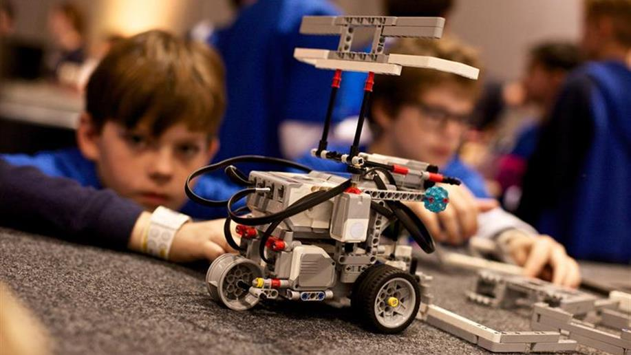
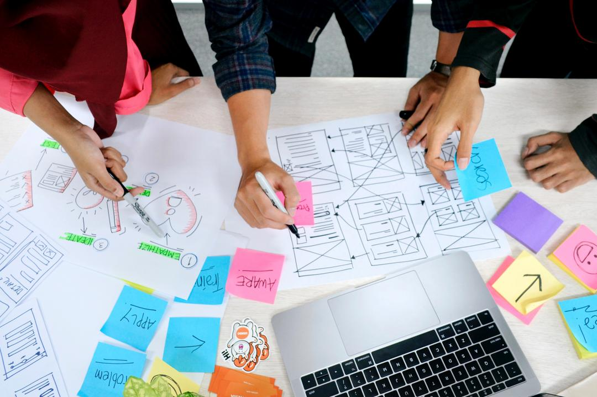

Sobre a escola
O itinerário de exatas geralmente se refere ao caminho acadêmico que os estudantes seguem para se formar em áreas relacionadas às ciências exatas, como matemática, física, química, engenharia, entre outras... Atualmente na grade de ensino do 2° ano possui as matérias comuns e as do intinerário escolido no caso a Exatas, que são: Ed. financeira, empreendedorismo, programação e robótica...
Robótica
Através da robótica educacional, os estudantes aprendem a projetar, construir e programar robôs, aplicando conceitos de mecânica, eletrônica e programação. Eles também aprendem a trabalhar em equipe, a solucionar problemas de forma colaborativa e a desenvolver habilidades socioemocionais como a resiliência, a liderança e a empatia.


Ed. Financeira
A educação financeira é um processo que visa aumentar a compreensão das pessoas sobre questões relacionadas ao dinheiro, ajudando-as a tomar decisões financeiras mais conscientes e informadas. A educação financeira envolve aprender sobre como administrar as finanças pessoais, como fazer orçamentos, poupar dinheiro, investir, gerenciar dívidas e entender conceitos financeiros básicos, como juros, inflação, taxas de câmbio, entre outros.
Empreendedorismo
O empreendedorismo é um processo de identificar uma oportunidade de negócio, reunir recursos e implementar uma ideia com o objetivo de criar valor econômico ou social. Um empreendedor é uma pessoa que é capaz de identificar uma oportunidade de negócio, avaliar seu potencial, reunir recursos e assumir o risco de iniciar e operar um novo negócio.
Programação

Programação é o processo de criação de software, aplicativos, sites e outras soluções tecnológicas por meio da escrita de instruções em linguagens de programação. A programação é uma habilidade essencial na era da tecnologia, uma vez que muitos dos dispositivos e sistemas que usamos no dia a dia são construídos com base em software.
Copyright (c) 2023 Vinicius027